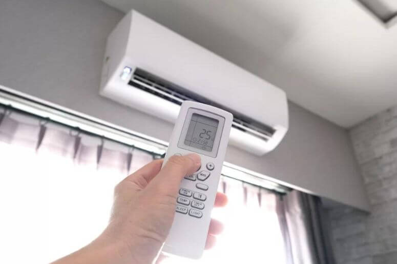

devidos a muitos pedidos os ar-condicionados foram intalados em varias escolas do Parana,dando um apoio nas escolas,devido a condicoes melhores dentro das salas de aulas,melhorando o aprenizado em salas de aula. O ar condicionado nas escolas é fundamental para garantir o conforto térmico e melhorar o rendimento escolar. No entanto, a implementação exige adaptações rigorosas na infraestrutura elétrica e atenção à qualidade do ar, segundo regulamentações governamentais
publicado dia 26 de setembro de 2024
